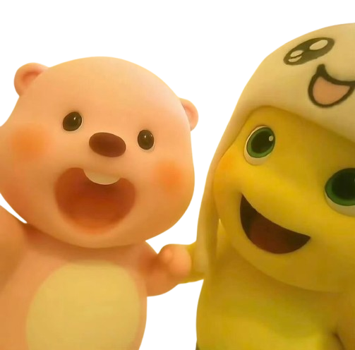

happy first anniversary, baby ko! I couldn't beliece na 1 year na agad tayo. parang kailan lang nung nagstart tayo mag usap tapos ngayon ARRRGHDFGSGF I'm giggling, kicking my feet, and all. we started talking when we were in grade 10 and who knew na ganito pala ikahahantungan non??? (me kasi ginayuma kita ok). I fr didn't expect any of this. ni hindi ko alam non na hihigit pa pala sa happy crush yung nararamdaman ko sayo. and now, nag c celeb na us ng anniversary. HAYS it feels so surreal.
alala ko pa puro pang aasar lang lagi kong gawain non and it somehow became part of my routine, hanggang sa dumating na yung point na di na nabubuo araw ko kapag di ka nababanas dahil sakin. may mga time pa na binablock mo ako kapag asar na asar ka na HAWDJHWAHDAHA.
I love how patient you are with me, especially nung time na muntik na us magbreak hjuehuheu. I really regret saying those things and letting my emotions take over. I'm so grateful na hindi ikaw pumayag kasi idk what I'd do if natuloy yon. thank you for staying even when things got hard, and thank you for treating me better than I deserve. also, thank you for understanding me kahit na minsan kahit ako di na rin maintindihan yung pumapasok sa isip ko. Ireally appreciate you, love.
in the span of 2 years of talking, the both of use grew. sure, there were moments na nakakagawa tayo ng actions na we regret doing afterwards, nagkakamali, or na o overwhelm by something, yet despire those moments, we continued choosing each other. we learned many things like how to understand each other and listen better. thank you, really, for staying by my side, loving me, and being the person I could yap to about everything that comes to my mind. I love you so much, baby. I still wanna make more memories with you like more kulitan, away na di serious, and hopefully, memories while being beside you naman (dates hweheh) :D. 1 YEAR DOWN, FOREVER TO GOOO!